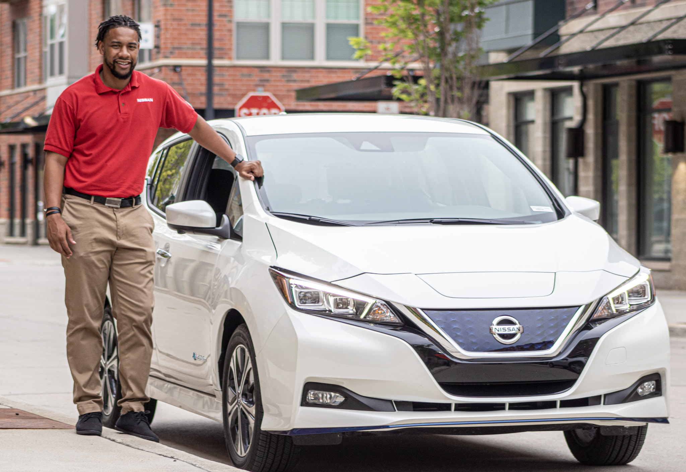
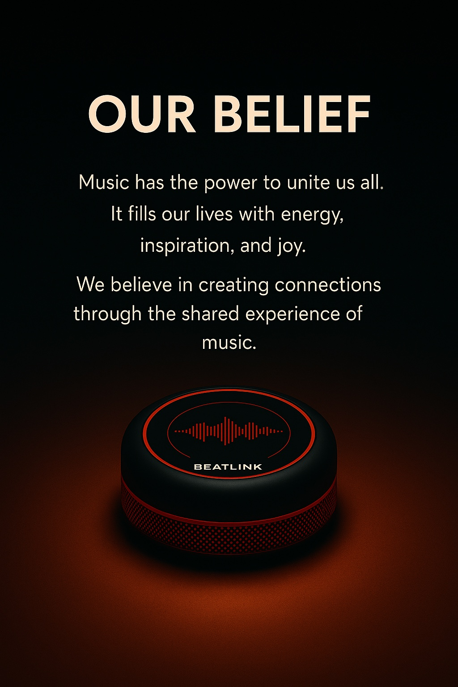
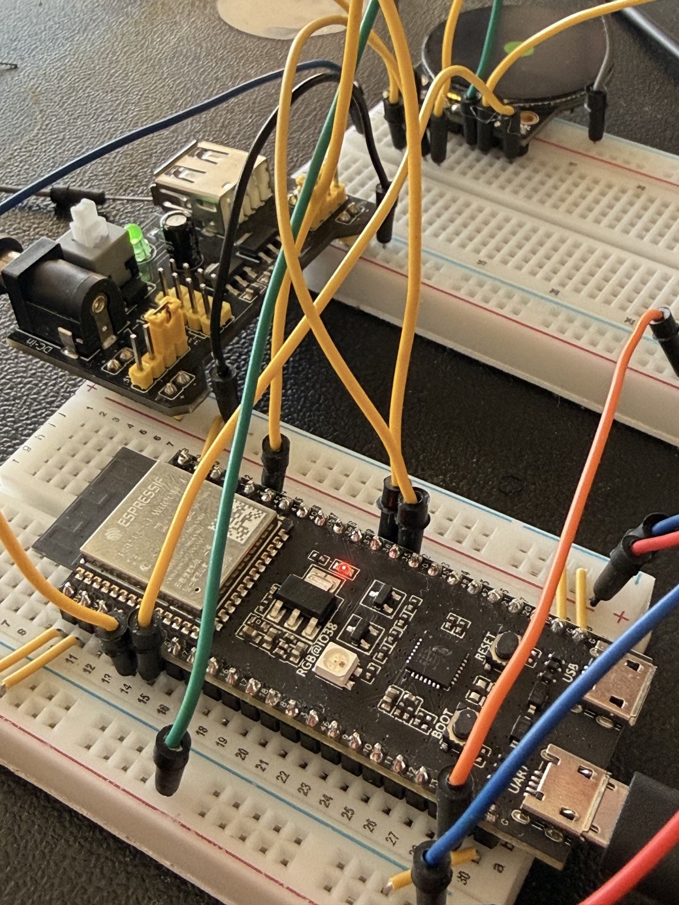

I build frameworks, products, and systems that help people make better decisions.
My work sits at the intersection of technology, product strategy, and human behavior — turning complex problems into solutions people can understand, align around, and use.
The best product opportunities begin with observation.
Most people start with solutions. I start with patterns — the thing that does not quite make sense, the behavior people repeat, or the gap between what a product is and what people need it to become.
02
Ideas are cheap. Execution is truth.
I enjoy strategy, vision, and ideation, but I trust prototypes more than opinions. I prefer to make ideas tangible quickly enough that reality can respond.
03
Better decisions create better outcomes.
Products and teams rarely fail because people do not care. They fail when decisions are made without the right information, context, or framework.
The easy decision was to stay the course. Development resources had already been invested in one path. But the EV market was moving quickly, and customer expectations were moving with it.
Presenting product direction during the Nissan LEAF chapter — the story was never only engineering; it was market position, customer value, and conviction.

The observation
Customers were not simply asking for an electric vehicle. They were asking for confidence. In that era, confidence was increasingly measured in range.
The contradiction
A planned 32kWh battery path represented real work and sunk investment, but it risked leaving the product less competitive against current and future EV offerings.
What I did
I built and presented a range-positioning argument that connected customer demand, competitive benchmarks, and future market direction to support a shift toward a 40kWh architecture.
The outcome
Leadership moved forward with the higher-capacity platform, helping position the redesigned LEAF as a stronger value EV and reinforcing a lesson that has stayed with me: past investment should not determine future direction when better information becomes available.
Apple · Reliability
The team did not want EPMs. Then they asked for more.
Reliability engineers were proud, skilled, and protective of their workflow. The answer was not to force process on them. It was to design a system that made their work easier without changing what made them effective.
A team moment from the Vision Pro reliability chapter. The story here is influence: becoming useful enough that a resistant organization wanted the function expanded.
The observation
The resistance was not to support. It was to support that felt like overhead. The team needed visibility, coordination, and escalation without losing engineering momentum.
The approach
I worked from the engineering workflow outward, building structures that flowed with the team’s existing behavior instead of fighting it.
The shift
By showing working-level outcomes side-by-side with legacy expectations, I helped leadership see why the new approach created more insight with less disruption.
The outcome
The organization’s perception of EPM support changed. The team wanted more EPMs, and the operating model helped define what the role became for that organization.
The win was not making engineers follow a process. The win was making the process worthy of the engineers.
Apple · Data Center Strategy
What does cost actually mean?
In consumer hardware, cost is often evaluated through the product you ship. In data center infrastructure, Apple is also the customer. That changes the question.
WorkloadWhat the system needs to do over time.
→
ArchitectureHow hardware choices shape performance, utilization, service, and scale.
→
Lifetime economicsThe full cost of owning, deploying, and operating the system.
The work is not just answering, “What does it cost?” It is helping leaders understand, “How should we evaluate what each dollar gets us?”
The problem
As my role evolved from cost direction for server hardware into data center strategy, the traditional component-level view of cost was no longer enough.
The framework
I began defining Total Cost of Ownership models that connect workload requirements, hardware architecture, infrastructure decisions, and lifecycle economics.
The leadership need
Directors and senior leaders do not only need numbers. They need interpretation: Are we overspending? Underinvesting? What does each dollar unlock?
The impact
The work creates a decision language for evaluating architecture tradeoffs across servers, cells, and data center deployment strategy.
Independent · AI Productivity
I did not build an AI assistant because I was interested in AI.
I built it because I was overwhelmed. New role, new partners, new meetings, new decisions — and too much mental energy spent figuring out what deserved attention.
Morning BriefThursday · Product Strategy
7
meetings 4.5h booked
Your highest-leverage moment today is the 2:00 architecture review. It connects directly to the launch decision next week. Prepare the tradeoff summary before noon.
Priorities
Prototype decision brief
Customer feedback synthesis
Cost model update
Prep Needed
10:30 · Engineering sync
2:00 · Architecture review
4:00 · Leadership update
The observation
Knowledge work often fails at the attention layer. The hard part is not always doing the work. It is deciding what matters, when it matters, and why.
The first version
I built an admin that could look at goals and schedule context, then surface inflection points for the day.
The evolution
It expanded into communications, meeting notes, recommended reading, and interactive planning — less chatbot, more work orchestration system.
The feeling
The product was tuned around trust, accomplishment, stability, and insight. The best version did not just organize tasks. It made the day feel understandable.
BeatLink · Founder / Builder
What if music could be designed as a product for connection?
BeatLink started with a belief: music creates synchrony. It helps strangers move together, families bond, and people from different backgrounds recognize something shared.


The observation
People are more connected digitally and more disconnected socially. Music can cut through that in a way few experiences can.
The hypothesis
A DJ controller integrated into a Bluetooth speaker could become more than audio hardware — it could become a shared experience device.
What I built
I developed a working prototype across wiring, soldering, software, app behavior, electronics integration, and iterative product tuning.
What I learned
Focused effort can turn an idea into something real. It also reminded me that at my core I can still build — not just manage, not just strategize, but make.
For a while, BeatLink was all I talked about, all I dreamed about, and all I wanted to figure out.
I want to be in the room where ideas become decisions.
I am at my best when the problem is ambiguous, the system is complicated, the stakes are real, and the answer is not obvious yet.
That is where I think clearly, build quickly, connect people, and push ideas toward reality.